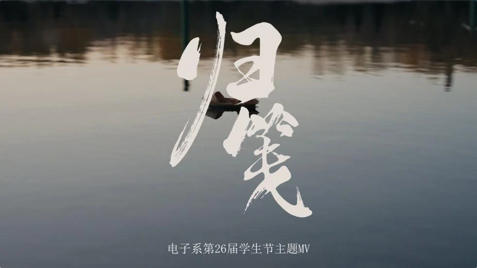
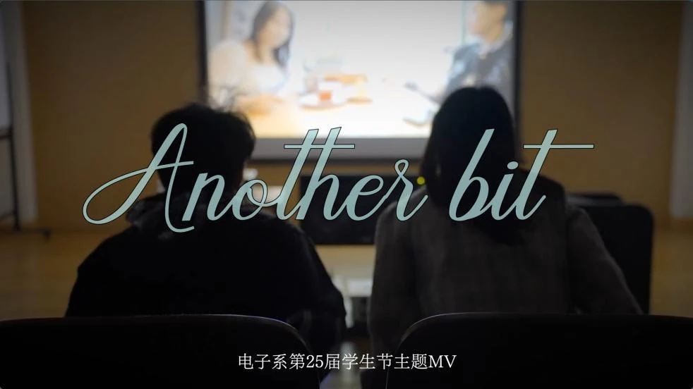
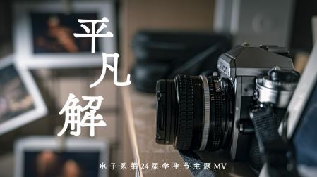
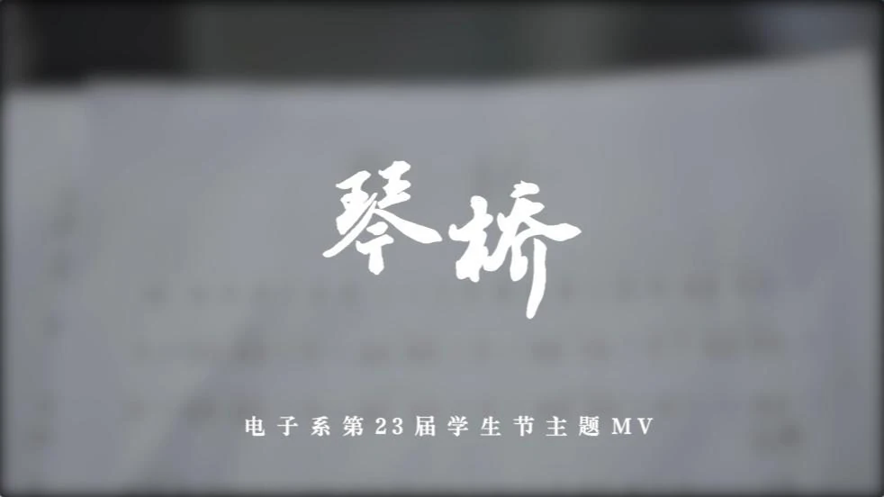
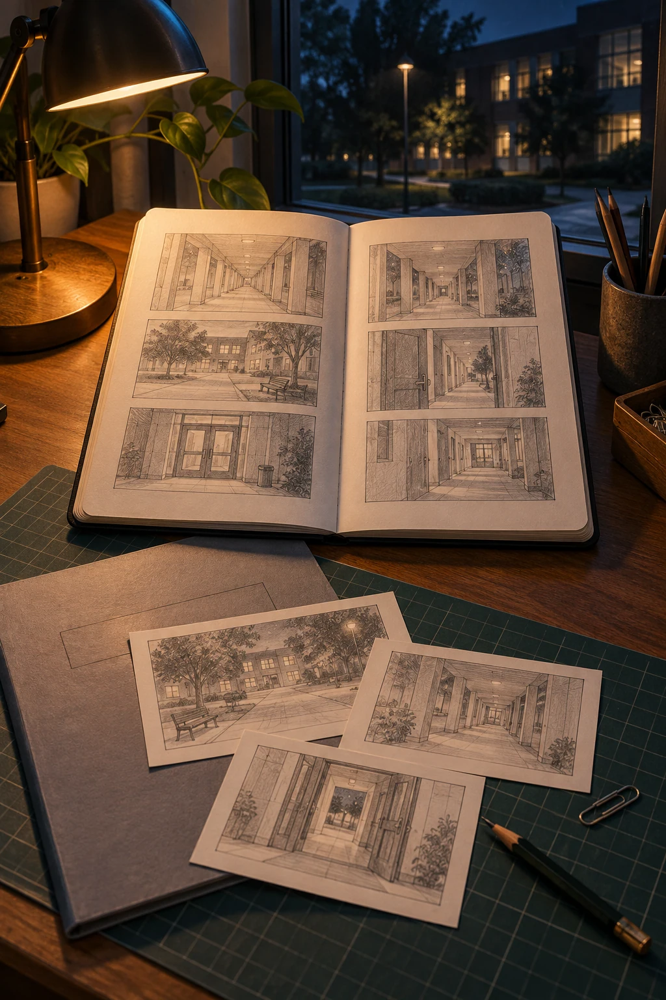
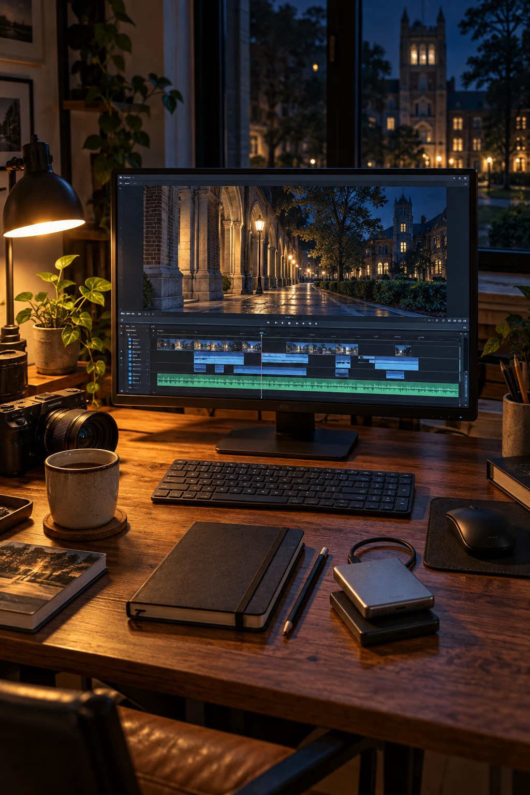

学生节音乐短片（MV）
从剧本设计到实景拍摄，从旋律创作到编曲录混，为我们的舞台献上我们的故事。
THU EEMC / MOVIE AND MUSIC
A FRAME. A NOTE. A POSSIBILITY.
以镜头记录，以音乐表达。
我们一起造梦。
01 / MOVIE AND MUSIC
我们以学生节音乐短片为创作舞台，把镜头、音乐与想象连接起来，也在日常拍摄、创作培训和经验分享中，一起寻找自己的表达。
从剧本设计到实景拍摄，从旋律创作到编曲录混，为我们的舞台献上我们的故事。
摄影理论、布景技巧、剪辑思路、调色方法、基础乐理、编曲配器……有求必应。
素材复用、主题自选，让每一个灵感都有被实践的机会。
分享视听创作，记录属于我们的生活。
02 / THE SCREENING ROOM
捕捉光影的每一瞬，记录灵感的每一刻。
用影像和音乐，讲自己的故事。
素材待补充
敬请期待




03 / COLLECTIVE CREATION
从一页纸，到一束光，再到一段回响。
所思所感，汇成所见所闻。

THE IDEA
从选题和讨论开始，确定故事主题、人物关系与情节走向，使用除对白外的一切方法提高画面和声音的表现力。再将剧本拆成分镜，明确每个镜头的对象、景别、构图，为现场拍摄提供依据。
故事在纸上亮起。镜头尚未开机，想象已有了方向。
THE MELODY
根据作品主题确定音乐风格和情绪，从旋律片段发展出主歌、副歌等段落，搭配和声并推敲歌词。通过试唱和修改调整音域、节奏与字句，形成可供后续编曲和录音使用的歌曲小样。
把没说出口的，写进旋律。让音符接住故事里的心跳与沉默。
THE FRAME
依据剧本和分镜勘察场地，安排演员、道具与拍摄顺序。现场完成布光、构图和机位设置，指导表演并拍摄各组镜头，检查画面、收音及镜头衔接，补拍必要素材，供后期剪辑使用。
让纸上的想象，走进真实的光。在日常里，留下属于故事的那一帧。
THE SOUND
根据歌曲结构安排乐器、节奏与伴奏层次，录制人声和乐器，挑选并整理各条音轨。通过音量、声像、均衡、压缩和混响处理，平衡各部分声音，完成混音并导出供剪辑使用的音频。
让旋律有呼吸，让声轨相回应。

THE CUT
整理拍摄素材，按叙事顺序选取镜头，调整切点与节奏，配合音乐完成声画同步。再校正曝光、白平衡与色彩，统一镜头观感，添加字幕，导出成片。
让画面与声音，在同一刻抵达舞台。
04 / OFF THE TIMELINE
有些瞬间留在成片里，有些故事留在我们心里。
从镜头之外，到成片之后。
2025 年学生节
MV《寻影》
确定「掠影」这个主题的时候，一些可用的意象或者素材就已经在脑中浮现了——回忆、留影、瞬间、错失……最终，我们从「掠」字着眼，想到了日常拍摄中的许多见而不得，构思了MV的剧本。
考虑到MV视频部分本身无声的表达方式，我们尽量精简了剧本结构，加入了不少重复镜头和呼应关系。主人公一点点放下繁重的摄影器材，最终收起镜头而真正走进她所想拍摄的景、物、人之中。我们希望通过这一过程，传达出一种类似从「看山是山」到「看山不是山」的心态转变。
而拍摄过程中，宇翚又提出了更进一步的想法，迎合音乐的分段加入了现在MV最后又重新拿起相机的部分。我初听这个创想时其实感觉会让视频结构有些许复杂，但的确折服于其带来的最后「看山还是山」的意境，确实又让MV中寄寓的想法再上了一个台阶。
生活中转瞬即逝的掠影，难以用镜头捕捉，需要用心去感受——这是本次的MV宣传主题。主人公是一个摄影爱好者，她想用相机定格飞鸟、晚霞、地铁上掠过的风景、闲庭信步的猫猫，却一次又一次错过想要的镜头；后来她开始收起镜头，走入景色感受这些美好的瞬间。
在音乐上，我们用多种方法表现「掠影」的意象，前半部分用了各种空灵的合成器音色和freestyle的电吉他，比较纠结和忧郁，后半部分则加入更多律动，跳跃的小提琴、沙锤和电吉他的氛围音造出很治愈的氛围，如同春日的暖阳。在视频上，用了很多前后呼应的镜头，反映出主人公的心态变化。
2024 年学生节
MV《归笺》
在视频方面，为了配合音乐的风格我们选择了相对干净的画面风格配合比较多的空镜来表现空灵氛围。并且这一次拍摄我们弱化了前期脚本的限制，更多选择的是在场景中灵活改变镜头，重心放在一些关键衔接镜头上。在后期上我们也选择的是较轻的力度，试图呈现一个自然的画面。
提到「无字诗」这个主题，我会想到两种理解方式：一是属于「无系」同学的诗，我们每个人的生活中都有独特的风景，都自成一首诗；二是这样的诗也恰好是「无字」的。
因此我们一直在想，该如何以音乐和视频的形式，发掘出这种生活中的诗意。在最终的MV中，我们讲述了一个诗人寻找灵感与归还灵感的故事，诗人在采风的路上，苦苦追寻却求之不得，最后她发现，其实她追寻的事情早已了然于心。
其实我们每个人都在从自己身边的事物中找寻生活的意义，试图回答「生活该怎样过」的问题。总有一天，我们会领悟生活的意义，从此如MV中的诗人一样不再为外物所困顿，此时，生活这首「无字诗」便成。
而在主题曲中，我们采用了一些中古调式与竖琴为主的伴奏织体，希望借这种风格带大家进入遥远的诗意。在主题曲的创作过程中，我们第一次尝试了集体作曲的模式，从结果来看效果是比较好的。
05 / SEE YOU IN THE NEXT FRAME
对摄影、音乐、创作充满热情，
对美和审美抱有追求。
留一段声音，给下一位同行的人。
KEEP CREATING. KEEP DREAMING.